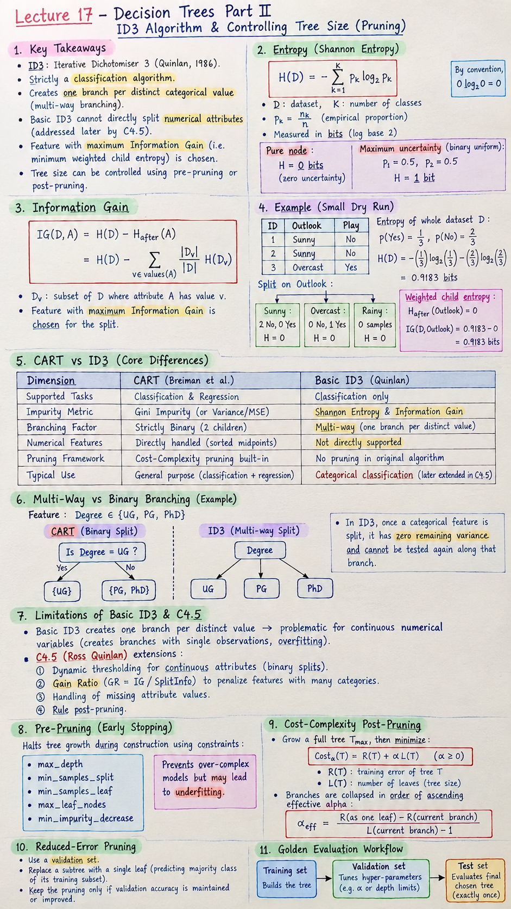

Short Notes & Visual Summary
Core principles, formulas, and cheat-sheet summary for Lecture 17:

Click image to open full size in a new tab
- ID3 Core Definition: Iterative Dichotomiser 3 (Quinlan, 1986). It is strictly a classification algorithm that creates one branch per distinct categorical value (multi-way branching). Basic ID3 cannot directly split numerical attributes (addressed later by C4.5).
- Entropy Formula (Shannon Entropy in bits): $$H(D) = - \sum_{k=1}^K p_k \log_2 p_k$$ Pure node: \(H = 0\) bits. Balanced binary node: \(H = 1\) bit. By convention, \(0 \log_2 0 = 0\).
- Information Gain: $$IG(D, A) = H(D) - H_{\text{after}}(A) = H(D) - \sum_{v \in \text{values}(A)} \frac{|D_v|}{|D|} H(D_v)$$ The feature yielding the maximum Information Gain (equivalent to minimum weighted child entropy) is chosen as the split.
- Pre-Pruning (Early Stopping): Halts growth during construction via constraints:
max_depth,min_samples_split,min_samples_leaf,max_leaf_nodes, andmin_impurity_decrease. Prevents over-complex models but risks underfitting. - Cost-Complexity Post-Pruning: Grows a full unconstrained tree \(T_{\max}\), then balances training error with tree size via penalty parameter \(\alpha \ge 0\): $$\text{Cost}_\alpha(T) = R(T) + \alpha L(T)$$ Branches are collapsed in order of ascending effective alpha: $$\alpha_{\text{eff}} = \frac{R(\text{as one leaf}) - R(\text{current branch})}{L(\text{current branch}) - 1}$$
- Reduced-Error Pruning: Directly evaluates validation accuracy. A subtree is replaced with a single leaf (predicting the majority class of its training subset). The pruning is retained if and only if validation accuracy is maintained or improved.
- Golden Evaluation Workflow: Training set builds the tree; Validation set tunes hyper-parameters (such as \(\alpha\) or depth limits); Test set evaluates the final chosen tree exactly once.
Transition from CART to ID3
1.1 Core Differences Between CART and ID3
While both CART and ID3 construct decision trees top-down by greedily evaluating feature splits, their structural philosophies, mathematical metrics, and supported problem domains differ fundamentally:
| Dimension | CART (Breiman et al.) | Basic ID3 (Quinlan) |
|---|---|---|
| Supported Tasks | Classification & Regression | Classification only |
| Impurity Metric | Gini Impurity (or Variance/MSE for regression) | Shannon Entropy & Information Gain |
| Branching Factor | Strictly Binary (always 2 children: Yes / No) | Multi-way (one branch per distinct categorical value) |
| Numerical Features | Directly handled via dynamic sorted midpoints | Not directly supported in basic ID3 |
| Pruning Framework | Cost-Complexity (Weakest-Link) pruning built-in | No pruning in original algorithm (added later) |
1.2 Multi-Way vs. Binary Branching for Categories
Consider the categorical feature Degree \in \{\text{UG}, \text{PG}, \text{PhD}\}:
- In CART: Evaluates binary subset questions such as "Is Degree = UG?". This creates exactly two children: \(\{\text{UG}\}\) and \(\{\text{PG}, \text{PhD}\}\).
- In ID3: If
Degreeis selected, it immediately splits the data into three distinct children simultaneously: one branch for UG, one for PG, and one for PhD. Once a categorical feature has been split in an ID3 branch, it has zero remaining variance and cannot be tested again along that branch.
1.3 Limitations of Basic ID3 (Numerical Inputs & C4.5)
Because basic ID3 creates one branch per distinct value, applying it naively to continuous numerical variables (or unique IDs) would create branches with single observations, yielding trivial zero entropy and massive overfitting. Ross Quinlan subsequently developed C4.5 to overcome these hurdles by introducing:
- Dynamic thresholding for continuous attributes (binary splits on numerical features).
- Gain Ratio (\(GR = IG / \text{SplitInfo}\)) to penalize features with many fine-grained categories.
- Handling of missing attribute values and rule post-pruning.
Information Theory, Entropy & Information Gain
2.1 Shannon Entropy Mathematical Formulation
In information theory (Claude Shannon, 1948), Entropy measures the average level of information, surprise, or uncertainty inherent in a random variable's possible outcomes. For a dataset \(D\) partitioned into \(K\) classes with empirical proportions \(p_k = n_k / n\):
$$H(D) = - \sum_{k=1}^K p_k \log_2(p_k)$$Base-2 logarithm is standard in computer science; entropy is thus quantified in bits:
- Completely Pure Node (\(p_1 = 1, p_{k > 1} = 0\)): $$H(D) = - 1 \log_2(1) - 0 = 0 \text{ bits} \quad (\text{zero uncertainty})$$
- Maximum Uncertainty (Binary Uniform: \(p_1 = 0.5, p_2 = 0.5\)): $$H(D) = - 0.5 \log_2(0.5) - 0.5 \log_2(0.5) = -0.5(-1) - 0.5(-1) = 1.0000 \text{ bit}$$
- Continuity Convention: \(\lim_{p \to 0^+} p \log_2 p = 0\). If a class is absent (\(p_k = 0\)), its contribution is 0.
2.2 Worked Dry Run on a 3-Row Subset
To demonstrate step-by-step arithmetic without rounding artifacts, consider rows {0, 1, 8} from the employment dataset with labels [E, U, U]:
- Count: \(n_E = 1, n_U = 2, n = 3\).
- Proportions: \(p_E = 1/3, p_U = 2/3\).
- Evaluate Entropy: $$\log_2(1/3) = -\log_2(3) \approx -1.5850, \quad \log_2(2/3) = \log_2(2) - \log_2(3) \approx 1 - 1.5850 = -0.5850$$ $$H(D) = - \left[\frac{1}{3}(-1.5850) + \frac{2}{3}(-0.5850)\right] = 0.5283 + 0.3900 = \mathbf{0.9183} \text{ bits}$$
2.3 Information Gain Formulation
Information Gain (IG) measures the expected reduction in entropy achieved by partitioning dataset \(D\) using feature \(A\):
$$IG(D, A) = H(D) - H_{\text{after}}(A) = H(D) - \sum_{v \in \text{values}(A)} \frac{|D_v|}{|D|} H(D_v)$$Continuing the 3-row example by testing feature Field:
Field = Sciencecontains Row 0 (E): 1 E, 0 U → \(H(\text{Science}) = 0\) bits (pure).Field = Artscontains Rows 1, 8 (U, U): 0 E, 2 U → \(H(\text{Arts}) = 0\) bits (pure).- Weighted Child Entropy: $$H_{\text{after}}(\text{Field}) = \frac{1}{3} H(\text{Science}) + \frac{2}{3} H(\text{Arts}) = \frac{1}{3}(0) + \frac{2}{3}(0) = 0 \text{ bits}$$
- Information Gain: $$IG(D, \text{Field}) = 0.9183 - 0 = \mathbf{0.9183} \text{ bits}$$ Splitting on Field eliminates 100% of the class uncertainty in this subset.
2.4 Why Weighting Must Reflect Parent Dataset Fractions
When computing \(H_{\text{after}}\), each child's entropy must be multiplied by its relative size in the immediate parent node: \(w_v = |D_v| / |D|\). Taking an unweighted arithmetic average \(\frac{1}{|V|} \sum H(D_v)\) assigns equal importance to a tiny 1-row branch and a massive 99-row branch, completely corrupting the information objective.
Complete ID3 Tree Construction Walkthrough
We execute the full ID3 algorithm on the complete 10-row Employment dataset (6 Employed, 4 Unemployed) using the two categorical features: Degree and Field.
Parent Dataset Entropy:
$$p_E = 6/10 = 0.6, \quad p_U = 4/10 = 0.4$$ $$H(D) = - 0.6 \log_2(0.6) - 0.4 \log_2(0.4) \approx - 0.6(-0.73697) - 0.4(-1.32193) \approx \mathbf{0.9710} \text{ bits}$$3.1 Evaluating Degree Split on the 10-Row Dataset
Degree has three categorical values: UG, PG, PhD. ID3 creates 3 branches simultaneously:
| Branch | Rows | E / U Counts | Node Entropy \(H(D_v)\) | Weight \(\frac{n_v}{n}\) | Weighted Entropy |
|---|---|---|---|---|---|
| UG | {0, 1, 6, 8} | 1 E / 3 U | \(-\frac{1}{4}\log_2\frac{1}{4} - \frac{3}{4}\log_2\frac{3}{4} \approx 0.8113\) | 4/10 = 0.4 | \(0.4 \times 0.8113 \approx 0.3245\) |
| PG | {2, 4, 7} | 2 E / 1 U | \(-\frac{2}{3}\log_2\frac{2}{3} - \frac{1}{3}\log_2\frac{1}{3} \approx 0.9183\) | 3/10 = 0.3 | \(0.3 \times 0.9183 \approx 0.2755\) |
| PhD | {3, 5, 9} | 3 E / 0 U | \(0.0000\) (Completely Pure) | 3/10 = 0.3 | \(0.3 \times 0 = 0.0000\) |
3.2 Evaluating Field Split & Root Selection
Field has two categories: Science and Arts:
- Science ({0, 2, 3, 6, 9}): 4 E, 1 U → \(H(\text{Science}) = -\frac{4}{5}\log_2\frac{4}{5} - \frac{1}{5}\log_2\frac{1}{5} \approx 0.7219\) bits.
- Arts ({1, 4, 5, 7, 8}): 2 E, 3 U → \(H(\text{Arts}) = -\frac{2}{5}\log_2\frac{2}{5} - \frac{3}{5}\log_2\frac{3}{5} \approx 0.9710\) bits.
- Weighted Child Entropy: $$H_{\text{after}}(\text{Field}) = \frac{5}{10}(0.7219) + \frac{5}{10}(0.9710) = 0.3610 + 0.4855 = \mathbf{0.8464} \text{ bits}$$
- Information Gain: $$IG(D, \text{Field}) = 0.9710 - 0.8464 = \mathbf{0.1245} \text{ bits}$$
\(IG(D, \text{Degree}) = 0.3710 \text{ bits} > IG(D, \text{Field}) = 0.1245 \text{ bits}\).
Degree is unambiguously selected as the Root Node!
3.3 Recursive Splitting on Mixed Subsets (UG and PG)
The root creates three branches:
- PhD branch: Already pure (3 E, 0 U). Becomes a terminal leaf predicting Employed (E).
- UG branch ({0, 1, 6, 8}): Split using
Field:- Science ({0, 6}): 1 E, 1 U → Both Degree (UG) and Field (Science) are exhausted. Class counts tie (1:1). Applying the tie-break rule (predict U), the leaf predicts U.
- Arts ({1, 8}): 0 E, 2 U → Pure leaf predicting U.
- PG branch ({2, 4, 7}): Split using
Field:- Science ({2}): 1 E, 0 U → Pure leaf predicting E.
- Arts ({4, 7}): 1 E (Row 7), 1 U (Row 4) → Tied (1:1). Tie-break predicts U.
3.4 Identical Feature Conflict & The Deterministic Ceiling
Look at Rows 0 and 6:
- Row 0: Degree = UG, Field = Science → Outcome = E
- Row 6: Degree = UG, Field = Science → Outcome = U
Their feature vectors are completely identical: \(\mathbf{x}_0 = \mathbf{x}_6 = [\text{UG}, \text{Science}]\). Similarly, Rows 4 and 7 share identical features \([\text{PG}, \text{Arts}]\) but have opposite outcomes (Row 4 is U, Row 7 is E).
Conclusion: No deterministic algorithm relying solely on Degree and Field can ever achieve 100% training accuracy. Rows 0 and 7 are misclassified under majority voting, limiting maximum possible training accuracy to exactly \(8/10 = \mathbf{80\%}\).
Overfitting, Underfitting & Pre-Pruning Controls
4.1 Diagnosing Model Fit with Training vs. Validation Error
A decision tree's training error monotonically decreases (or stays flat) as its depth increases. However, out-of-sample generalization exhibits the classic U-shaped bias-variance curve:
- Underfitting (High Bias): Tree is too small (e.g. single root leaf predicting 60% accuracy). Both training and validation errors are elevated.
- Overfitting (High Variance): Tree grows unbounded, creating tiny leaves isolating single noise instances. Training error approaches 0%, while validation error sharply surges.
4.2 Pre-Pruning Stopping Criteria (max_depth, min_samples_split, min_samples_leaf)
Pre-Pruning halts the recursive partitioning process early if any predefined threshold is violated:
| Hyperparameter | Level Evaluated | Stopping Mechanism & Example |
|---|---|---|
max_depth | Tree / Path | Limits the maximum path length from root (depth 0). If max_depth = 1, root splits, but its children become terminal leaves. |
min_samples_split | Parent Node | Minimum samples a node must contain to even consider splitting. If a node has 3 rows and min_samples_split = 4, it remains an unsplit leaf. |
min_samples_leaf | Child Nodes | A proposed split is rejected if either child would contain fewer than this threshold. If a split produces children of size 1 and 5, and min_samples_leaf = 2, the split is rejected. |
4.3 Global Constraints (max_leaf_nodes & min_impurity_decrease)
max_leaf_nodes: Enforces a strict global budget on total terminal leaves. Splits are added best-first until the leaf quota is filled.min_impurity_decrease: A split is only permitted if the weighted reduction in impurity satisfies: $$N_{\text{node}} / N_{\text{total}} \times \left( H(D) - \frac{n_Y}{n} H(D_Y) - \frac{n_N}{n} H(D_N) \right) \ge \text{threshold}$$
4.4 Feature Subsampling (max_features) vs. Structural Pruning
max_features randomly subsets the candidate features inspected at each split. While it acts as a powerful regularizer (and forms the cornerstone of Random Forests), it is not strictly a pruning parameter because it does not bound tree depth or leaf count.
Post-Pruning Paradigms
5.1 Cost-Complexity Pruning (Weakest-Link & Effective Alpha)
Post-pruning allows the tree to grow fully first, then systematically trims branches from the bottom up. Cost-Complexity Pruning (Minimal Cost-Complexity Pruning in CART) defines an objective function parameterized by penalty \(\alpha \ge 0\):
$$\text{Cost}_\alpha(T) = R(T) + \alpha |T|$$- \(R(T)\): Total training error or weighted leaf impurity sum: \(R(T) = \sum_{\ell \in \text{leaves}} \frac{n_\ell}{n} H(D_\ell)\).
- \(|T| = L(T)\): Number of terminal leaves in tree \(T\).
- \(\alpha\): Complexity parameter penalizing tree size. When \(\alpha = 0\), the fully grown tree wins. As \(\alpha \to \infty\), the tree collapses to the single-node root.
Weakest-Link Principle & Effective Alpha:
At any internal node \(t\) heading a branch \(T_t\), collapsing \(T_t\) into a single leaf increases training error by \(R(t) - R(T_t)\) while eliminating \(|T_t| - 1\) leaves. The effective alpha is the cost increase per leaf removed:
$$\alpha_{\text{eff}}(t) = \frac{R(t) - R(T_t)}{|T_t| - 1}$$The branch with the smallest \(\alpha_{\text{eff}}\) is the "weakest link" and is pruned first.
5.2 Step-by-Step Cost Evaluation Across Alpha Values
From Worksheet Section 9, consider 4 candidate subtrees with leaves \(\{8, 5, 2, 1\}\) and training scores \(\{0.10, 0.12, 0.15, 0.20\}\):
| Tree | Leaves \(L(T)\) | Training \(R(T)\) | Cost at \(\alpha = 0.005\) | Cost at \(\alpha = 0.010\) | Cost at \(\alpha = 0.020\) |
|---|---|---|---|---|---|
| \(T_8\) | 8 | 0.10 | 0.10 + 0.005(8) = 0.140 (Best) | 0.180 | 0.260 |
| \(T_5\) | 5 | 0.12 | 0.145 | 0.170 (Tie) | 0.220 |
| \(T_2\) | 2 | 0.15 | 0.160 | 0.170 (Wins tie: fewer leaves) | 0.15 + 0.020(2) = 0.190 (Best) |
| \(T_1\) | 1 | 0.20 | 0.205 | 0.210 | 0.220 |
5.3 Reduced-Error Pruning on Validation Sets
Reduced-Error Pruning uses a held-out validation set directly without mathematical penalties:
- Traverse internal nodes bottom-up (testing deeper subtrees before parents).
- Temporarily prune a subtree and replace it with a single leaf predicting the training majority class of that node.
- Evaluate classification accuracy across the entire validation set.
- Decision Rule:
- If validation accuracy increases or remains exactly equal (tie) → Keep the pruning (simpler model is strictly preferred).
- If validation accuracy decreases → Undo the change and preserve the subtree.
Comprehensive Problem Set & Exam Practice Solutions
6.1 Solved Practice P1: Entropy Gain & Weighting Traps
- P1a Matches:
- Parent entropy → C: Class uncertainty before a question
- One child's entropy → D: Class uncertainty within one group
- Weighted child entropy → A: Uncertainty left after all rows have been divided
- Information gain → B: Uncertainty removed by a feature
- P1b True/False Statements:
- "Swapping class names E and U changes entropy." → False. Entropy depends purely on proportions \(\{p_k\}\); \(-p_E \log p_E - p_U \log p_U\) is strictly symmetric.
- "If every child is pure, information gain equals parent entropy." → True. Every \(H(D_v) = 0 \implies H_{\text{after}} = 0 \implies IG = H(D) - 0 = H(D)\).
- "ID3 can separate rows 0 and 6 by splitting Degree or Field again." → False. Both rows have Degree = UG and Field = Science. Neither feature has any remaining variation to split.
- P1c Dry Run: 10 rows (6 E, 4 U), \(H(D) = 0.9710\). Child 1 has 2 E (\(n_1 = 2, H_1 = 0\)). Child 2 has 4 E, 4 U (\(n_2 = 8, H_2 = 1.0\)). $$H_{\text{after}} = \frac{2}{10}(0) + \frac{8}{10}(1) = \mathbf{0.8000} \text{ bits}$$ $$IG = 0.9710 - 0.8000 = \mathbf{0.1710} \text{ bits}$$ Unweighted error: A student averaging \((0+1)/2 = 0.5\) gets \(IG = 0.9710 - 0.5 = 0.4710\), which artificially overstates gain because it ignores that 80% of rows reside in the totally impure child.
6.2 Solved Practice P2: Complete 6-Row ID3 Dry Run
Dataset: A(UG, Science, U), B(UG, Arts, U), C(PG, Science, U), D(PG, Arts, E), E(PG, Arts, E), F(PG, Science, E):
- Total rows: 3 E, 3 U → \(H(D) = 1.0000\) bit.
- Degree Split:
- UG (A, B): 0 E, 2 U → \(H = 0\) (pure).
- PG (C, D, E, F): 3 E, 1 U → \(H = 0.8113\).
- \(H_{\text{after}}(\text{Degree}) = \frac{2}{6}(0) + \frac{4}{6}(0.8113) = \frac{2}{3}(0.8113) \approx \mathbf{0.5409}\) → \(IG \approx \mathbf{0.4591}\) bits.
- Field Split:
- Science (A, C, F): 1 E, 2 U → \(H = 0.9183\).
- Arts (B, D, E): 2 E, 1 U → \(H = 0.9183\).
- \(H_{\text{after}}(\text{Field}) = \frac{3}{6}(0.9183) + \frac{3}{6}(0.9183) \approx \mathbf{0.9183}\) → \(IG \approx \mathbf{0.0817}\) bits.
- Root: Degree wins. Inside PG (3 E, 1 U), splitting on Field isolates Arts (2 E, 0 U → E) and Science (1 E, 1 U → tie-break predicts U). Rows C and F are indistinguishable; training accuracy is \(5/6 = \mathbf{83.33\%}\).
6.3 Solved Practice P4 & P5: Pruning Bounds & Alpha Calculations
- P4b Pre-Pruning Scenarios:
- Parent size 6, children sizes 1 and 5;
min_samples_split = 4,min_samples_leaf = 2: REJECT because child size 1 <min_samples_leaf(2). - Children sizes 3 and 3 under same limits: ALLOW (Parent \(6 \ge 4\), children \(3 \ge 2\)).
- Leaf at depth 1 with
max_depth = 1: CANNOT SPLIT. - Binary tree has 4 leaves,
max_leaf_nodes = 5: CAN SPLIT (splitting 1 leaf adds 1 net leaf: \(4 - 1 + 2 = 5\)).
- Parent size 6, children sizes 1 and 5;
- P5b Weakest-Link Removal:
- Branch C: \(\alpha_{\text{eff}} = \frac{0.14 - 0.08}{4 - 1} = \frac{0.06}{3} = \mathbf{0.020}\)
- Branch D: \(\alpha_{\text{eff}} = \frac{0.09 - 0.08}{2 - 1} = \frac{0.01}{1} = \mathbf{0.010}\)
- Decision: Remove Branch D first (smallest effective alpha). A larger branch is not automatically removed first; the increase in error per leaf eliminated governs the sequence.
6.4 Solved Practice P6 & P7: Reduced-Error Workflow & Protocol Verification
- P6a/b Reduced-Error Workflow: Subtree training majority is E (3 E vs 1 U). When testing the 6 validation rows, replacing with leaf E gives correct predictions on Rows 1, 2, 4, 5, 6 (5 correct). Across all 20 rows, total correct becomes \(12 + 5 = 17\) (85%), tying the unpruned tree → Keep the pruning. In step P6b, Trial D with 17 correct is undone because the accepted tree baseline had already advanced to 18 correct during Trial C.
- P7c Fixing Flawed ML Procedure:
Data Leakage Violation
Flaw: Tuning hyperparameter \(\alpha\) on the test set causes test data leakage, leading to optimistic, biased performance estimates.
Correct Protocol:
- Partition dataset strictly into Training (60-70%), Validation (15-20%), and Test (15-20%) sets.
- Grow full decision trees on the Training set only.
- Evaluate candidate \(\alpha\) values (or pre-pruning limits) on the Validation set to choose the optimal tree size.
- Evaluate the single chosen tree on the Test set exactly once to report true generalization error.
Original PDF Notes
Below is the original PDF document for your reference: